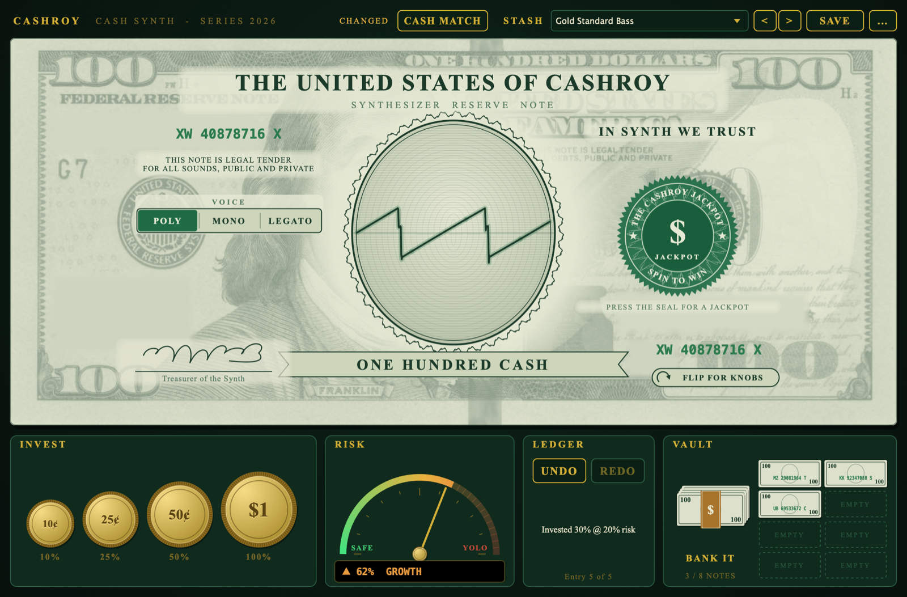
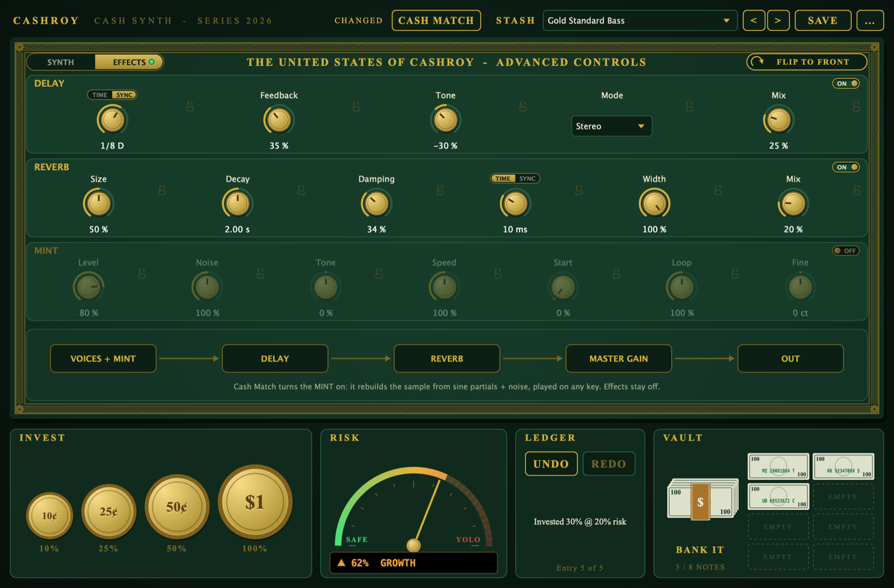
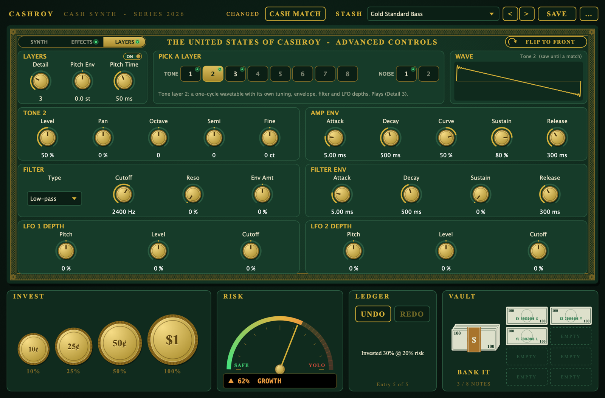

Cash Synth.
A synth on a $100 bill. Drop in a sample and Cash Match rebuilds it twice: the MINT, an exact copy made of sine partials and noise, and LAYERS, a patch of normal synth parts you can edit. Both play on any key.
Version 1.0 · Free · Windows 10 & 11 (x64) · macOS 11+ (Apple silicon, Intel) · built with JUCE 8 · Source
On your phone? Open this page on your PC or Mac to install it.
What it does.
Cash Match
Load a sample up to 10 seconds long. A cheque shows how close the match is, part by part, and DEPOSIT puts it on the bill.
The MINT
Up to 128 sine partials plus shaped noise, measured from your sample. The synth makes the sound itself; it never plays the sample back.
LAYERS
The same match as an editable patch: up to 8 wavetable layers and 2 noise bands, each with its own tuning, envelope, filter and LFO depths. Every one is a normal knob you can automate.
Still a synth
Matched sounds keep the amp envelope, LFOs, filter, drive, glide, unison, delay and reverb. Skip into the attack or resize the held loop.
Money moves
Invest coins nudge the sound, the Risk dial sets how wild, the seal hits the Jackpot. Every move can be undone, and you can bank up to 8 sounds in the vault.
Locks and codes
Padlock any knob so the money moves leave it alone. Every sound is also a CashCode you can copy and paste.
In time
LFOs, delay and reverb pre-delay sync to the host tempo and lock to the song position.
Pictures.







Setup.
Download
CashSynth-Setup.exe on Windows, CashSynth-mac.pkg on a Mac.
Install
Pick VST3, AU (Mac) and the standalone app, or keep them all. On Windows, if SmartScreen appears, click More info → Run anyway.
Open your DAW
Rescan plug-ins and add Cash Synth as an instrument. Logic finds it on its next launch.
Cash in
Hit CASH MATCH, drop in a sample, and play it on any key.
Heads up: the installers aren't signed by Apple or Microsoft yet. On a Mac, if the pkg won't open, go to System Settings → Privacy & Security and click Open Anyway. Prefer to build it yourself? The build steps are on GitHub.